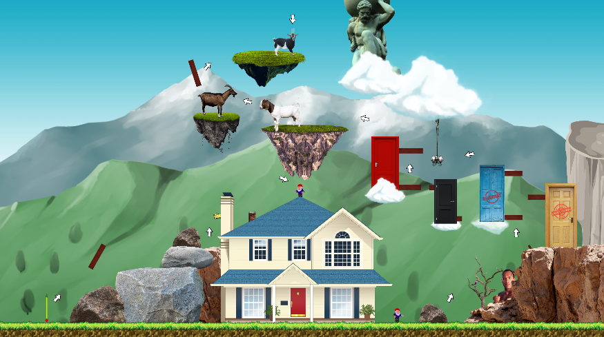
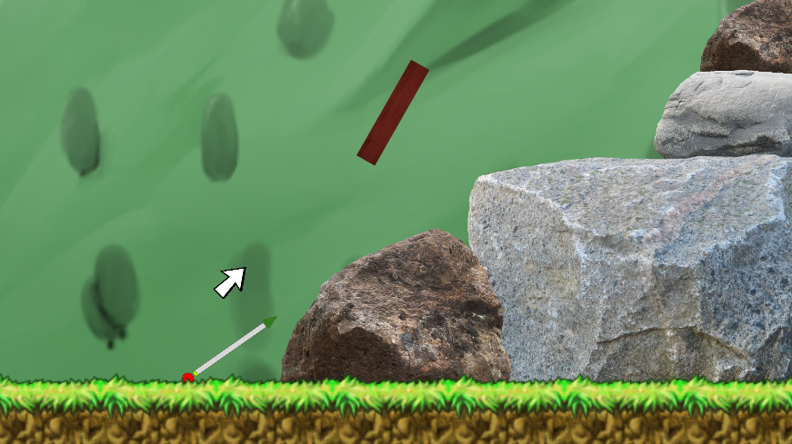
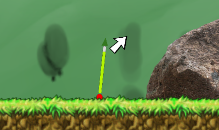

Inspired by the games Getting Over It and Golfing Over It, Spinning Through It offers a new level of stressful gameplay. The goal of the game is to move the ball up the level by controlling a power bar that determines the initial impact force on the ball. However, the player must time their shots correctly as the power bar slides back and forwards, and constantly revolves around the ball. In other words, speed and direction are both uncontrollable forces that the player must time correctly to achieve their goals.
Summary
Screenshots


